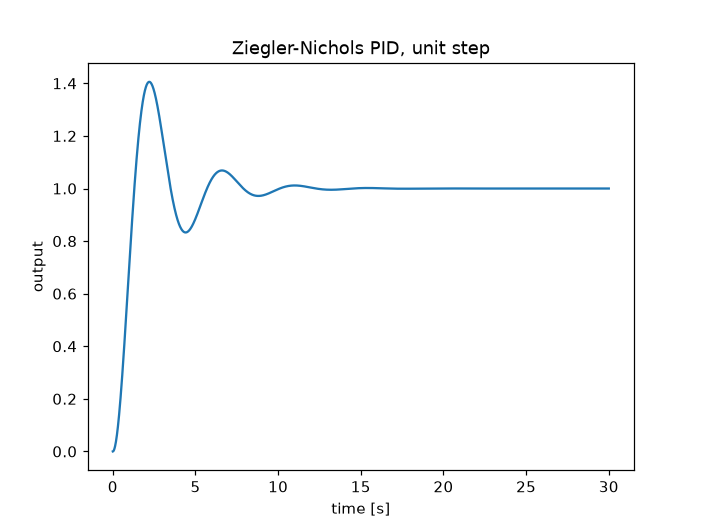
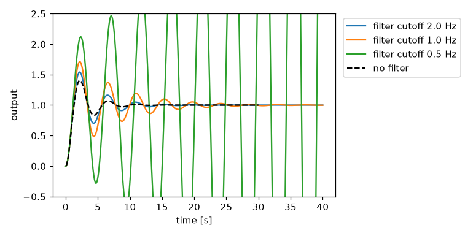

A feedback loop in the time and frequency domains#
A control engineer judges a loop twice: by its step response, in time,
and by its gain and phase margins, in frequency. This tutorial tunes one
loop with engineeringkit.control_systems, then uses
engineeringkit.signal_processing to measure its frequency response
from sampled data and to show what a sensor filter does to it.
The plant is three identical first-order lags, \(G(s) = 1/(s+1)^3\), a standard stand-in for a thermal or chemical process: no single lag is hard to control, but three in a row add up to 270 degrees of phase lag.
1. Where the loop goes unstable#
Ziegler and Nichols tuned a controller from two numbers measured on the real loop: the proportional gain \(K_u\) at which it starts to oscillate, and the period \(T_u\) of that oscillation. On a model they are the gain margin and the phase-crossover frequency of \(G\). Routh’s criterion on the closed-loop characteristic polynomial \(s^3 + 3s^2 + 3s + 1 + K\) confirms the boundary:
import matplotlib.pyplot as plt
import numpy as np
from engineeringkit import control_systems as cs
from engineeringkit import signal_processing as sp
G = cs.transfer_function([1], [1, 3, 3, 1])
plant = cs.stability_margins(G)
ku, wu = plant["gain_margin"], plant["phase_cross_frequency"]
tu = 2 * np.pi / wu
print(f"K_u = {ku:.3f}, w_u = {wu:.4f} rad/s (sqrt 3), T_u = {tu:.3f} s")
print("Routh stable at 0.99 K_u:", cs.routh_stable([1, 3, 3, 1 + 0.99 * ku]))
print("Routh stable at 1.01 K_u:", cs.routh_stable([1, 3, 3, 1 + 1.01 * ku]))
# K_u = 8.000, w_u = 1.7321 rad/s (sqrt 3), T_u = 3.628 s
# Routh stable at 0.99 K_u: True
# Routh stable at 1.01 K_u: False
2. A Ziegler-Nichols PID in the time domain#
The classic rules give the three PID gains from \(K_u\) and \(T_u\). The step response of the closed loop is the time-domain verdict:
pid = cs.ziegler_nichols(ku, tu)
print(f"kp = {pid.kp:.2f}, ki = {pid.ki:.2f} 1/s, kd = {pid.kd:.2f} s")
t = np.linspace(0, 30, 3001)
response = pid.simulate(G, T=t)
overshoot = 100 * (response.y.max() - 1)
print(f"overshoot {overshoot:.1f}%, final value {response.y[-1]:.4f}")
# kp = 4.80, ki = 2.65 1/s, kd = 2.18 s
# overshoot 40.6%, final value 1.0000
fig, ax = response.plot()
ax.set(xlabel="time [s]", ylabel="output", title="Ziegler-Nichols PID, unit step")

The integral action removes the steady-state error, but a 41% overshoot is more than most processes accept. Ziegler and Nichols aimed for a quarter-amplitude decay, which is lightly damped by today’s standards.
3. The same loop in the frequency domain#
The loop transfer function is \(L(s) = C(s)G(s)\). Multiplying two transfer functions multiplies their numerator and denominator polynomials. Its phase margin is how much extra lag the loop tolerates at the gain crossover before it goes unstable:
C = pid.transfer_function()
loop = cs.transfer_function(np.polymul(C.num, G.num), np.polymul(C.den, G.den))
margins = cs.stability_margins(loop)
wc = margins["gain_cross_frequency"]
print(f"phase margin {margins['phase_margin_deg']:.1f} deg at w_c = {wc:.3f} rad/s")
# phase margin 30.6 deg at w_c = 1.375 rad/s
A second-order loop links the two domains through the damping ratio: \(\zeta \approx \mathrm{PM}/100\) and the overshoot is \(e^{-\pi\zeta/\sqrt{1-\zeta^2}}\). Detuning all three gains together moves both numbers:
for scale in (1.0, 0.6, 0.4):
c = cs.PID(scale * pid.kp, scale * pid.ki, scale * pid.kd)
ct = c.transfer_function()
pm = cs.stability_margins(cs.transfer_function(np.polymul(ct.num, G.num), np.polymul(ct.den, G.den)))["phase_margin_deg"]
predicted = cs.second_order_metrics(pm / 100, 1.0)["percent_overshoot"]
actual = 100 * (c.simulate(G, T=t).y.max() - 1)
print(f"gains x{scale}: PM {pm:4.1f} deg, overshoot {actual:4.1f}% (second-order rule {predicted:4.1f}%)")
# gains x1.0: PM 30.6 deg, overshoot 40.6% (second-order rule 36.4%)
# gains x0.6: PM 39.0 deg, overshoot 30.0% (second-order rule 26.4%)
# gains x0.4: PM 46.7 deg, overshoot 21.4% (second-order rule 19.0%)
The rule is approximate, because this loop is fourth order, but it ranks the tunings correctly: every degree of phase margin buys damping.
4. Measuring the frequency response from samples#
On a real plant there is no transfer function to evaluate, only signals. The frequency response of a system is the Fourier transform of its impulse response, so sampling the closed loop’s impulse response and taking a DFT measures \(|T(j\omega)|\). Scaled by the sample spacing, the DFT approximates the continuous transform:
closed = pid.closed_loop(G)
fs = 20.0 # sampling rate [Hz]
ts = np.arange(0, 60, 1 / fs)
_, h = cs.impulse_response(closed, T=ts)
H = sp.dft(h) / fs
f = sp.fft_frequencies(len(h), fs)
for w in (0.2, 0.5, 1.0, 1.4):
k = np.argmin(abs(2 * np.pi * f - w))
_, mag_db, _ = cs.bode(closed, w=[2 * np.pi * f[k]])
print(f"w = {2 * np.pi * f[k]:.3f} rad/s: from samples {20 * np.log10(abs(H[k])):5.2f} dB, from the model {mag_db[0]:5.2f} dB")
assert abs(20 * np.log10(abs(H[k])) - mag_db[0]) < 0.05
# w = 0.209 rad/s: from samples 0.14 dB, from the model 0.14 dB
# w = 0.524 rad/s: from samples 0.93 dB, from the model 0.93 dB
# w = 1.047 rad/s: from samples 3.93 dB, from the model 3.93 dB
# w = 1.361 rad/s: from samples 5.55 dB, from the model 5.55 dB
The resonant peak near the crossover, more than 5 dB, is the frequency-domain face of the 41% overshoot.
5. A sensor filter in the loop#
Real measurements are noisy, and the obvious cure is a low-pass filter on the sensor. But a filter is a lag, and it sits inside the loop. Its phase at the crossover frequency comes straight off the phase margin. A second-order digital Butterworth filter running at the 20 Hz sample rate shows how much, and the same filter modelled as an analog transfer function in the loop confirms it:
pm0 = margins["phase_margin_deg"]
for fc in (2.0, 1.0, 0.5): # filter cutoff [Hz]
bz, az = sp.butterworth_lowpass(2, fc, fs)
_, hz = sp.frequency_response(bz, az, worN=[wc / (2 * np.pi)], fs=fs)
lag = -np.degrees(np.angle(hz[0]))
wf = 2 * np.pi * fc
filtered = cs.transfer_function(np.polymul(loop.num, [wf**2]), np.polymul(loop.den, [1, np.sqrt(2) * wf, wf**2]))
pm = cs.stability_margins(filtered)["phase_margin_deg"]
print(f"cutoff {fc:3.1f} Hz: filter lag at w_c {lag:4.1f} deg, phase margin {pm0:.1f} -> {pm:5.1f} deg")
assert abs(lag - (pm0 - pm)) < 1.0
# cutoff 2.0 Hz: filter lag at w_c 8.6 deg, phase margin 30.6 -> 21.7 deg
# cutoff 1.0 Hz: filter lag at w_c 17.9 deg, phase margin 30.6 -> 12.6 deg
# cutoff 0.5 Hz: filter lag at w_c 37.4 deg, phase margin 30.6 -> -6.2 deg
fig, ax = plt.subplots(figsize=(7, 3.5))
for fc in (2.0, 1.0, 0.5):
wf = 2 * np.pi * fc
closed_f = cs.feedback(
cs.transfer_function(np.polymul(C.num, G.num), np.polymul(C.den, G.den)),
cs.transfer_function([wf**2], [1, np.sqrt(2) * wf, wf**2]),
)
tt, y = cs.step_response(closed_f, T=np.linspace(0, 40, 4001))
ax.plot(tt, y, label=f"filter cutoff {fc} Hz")
ax.plot(t, response.y, "k--", label="no filter")
ax.set(xlabel="time [s]", ylabel="output", ylim=(-0.5, 2.5))
ax.legend(loc="upper left", bbox_to_anchor=(1.01, 1))
fig.tight_layout()

A 2 Hz filter, nine times faster than the crossover, costs 9 degrees. A 0.5 Hz filter, barely twice as fast, costs the whole margin: the loop oscillates with growing amplitude. The rule of thumb that follows, keep every filter in the loop a decade above the crossover, is a phase-margin budget. The digital filter’s lag and the analog model’s loss of margin agree to within a degree, because at 20 Hz the bilinear transform barely warps frequencies this low.
See also: the Ziegler-Nichols and Bode margins examples, the signal_processing gallery, and the Control systems exercises exercises.